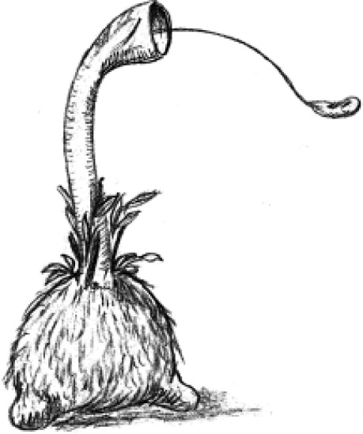
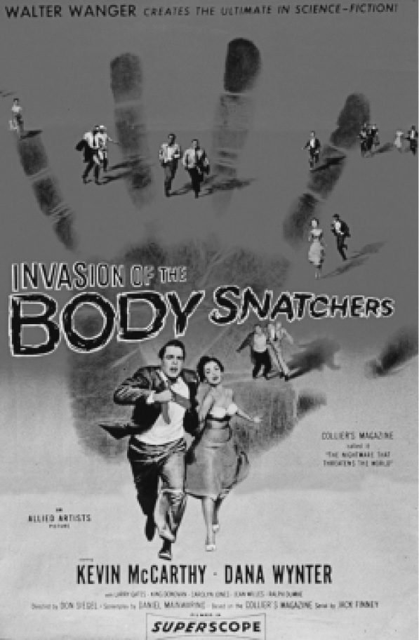

第二次世界大战之后的几十年内，通俗小说中的粗野怪兽演变成了形形色色的生物，它们的行为表现出侵略性和威胁性。异族入侵这类叙事往往会引起这样一个赤裸裸的话题：征服与被征服。但此类叙事文本往往有一种微妙之处，它们采用种种策略来延缓揭示异族身份的时刻，因为反抗异族的前提是看到并明确异族的身份。为了展现人类面临的各种威胁，这些叙事都会不断地同哥特式文学产生交集。
在来自英国的范例当中，电视连续剧《夸特马斯实验》（1955）把同异族的接触戏剧化为一种感染行为。一枚坠毁在温布尔登公园的火箭上载有唯一的一名宇航员，他身上携带着一种吸收性病毒。这位名叫卡隆的宇航员心理受创，已经很难记起发生了什么事，而这段失落的记忆也成为一个谜。在剧里，先是火箭中发现了“果冻状物质”，然后卡隆开始变异，手成了灰色的非人形状，接着在西敏寺里出现了一大帮怪物，最后这帮怪物又在西敏寺里被消灭了。第二部《夸特马斯实验》和电影《夸特马斯2》（1957）中描述的异族入侵比第一部更加详细。在一部坠毁在地球上的雷达中有人捡到了神秘的物体，检查后发现其中一些物体是中空的容器，估计原来是装着什么东西的。调查雷达坠毁的地区时，首席科学家夸特马斯偶然发现了一座神秘的工厂，它显然是由政府建造的，作为最高机密禁止外人进入。小说作者奈杰尔·凯尼尔后来回忆说，当初他写小说的时候，这个桥段表达了50年代中期民众对官僚机构和秘密设施的担忧。和第一部一样，影片先是通过对工厂附近居民感染奇怪疫病的报道抛出了一个悬念。工厂的安保人员被当地人称作“僵尸”，因为他们戴着面罩，看起来和昆虫一样。最终谜底揭晓，这座工厂一直在制造合成食物，饲养从天空中坠落到地球上的有机体。最后，夸特马斯把这些生物逐回它们自己的小行星，并摧毁了它们。这部电影的美国片名比较引人注目，叫作《天外来敌》。
英国最宏大的异族入侵叙事当属20世纪50年代约翰·温德姆的小说，他沿用前人的策略，把科幻的主题嵌入日常生活的环境细节之中。《三尖树时代》（1951）向读者展现了两个对人类同时存在的威胁，一个来自地外，一个来自有机体。三尖树是在苏联的生物实验中被制造出来的，在一起空难中它们的孢子洒落到了英国。作者这么写并非出于偶然，当时传闻说有卫星把生化武器扔到了英国，这里就体现出英国人的恐惧。第二次“袭击”来自绿色的流星，凡是观看流星雨的人都失明了。这样整个国家都陷入了瘫痪，人类也不再处于优势物种的地位，面对三尖树的攻击只能坐以待毙，到了小说的第二部分，这些三尖树开始猎取人头了。

图5 约翰·温德姆《三尖树时代》（1951）的插画草图
布赖恩·奥尔迪斯指责温德姆制造了一场“舒适的大劫难”，但是这么说对温德姆的委婉平淡的叙事方法并不公平，因为温德姆显然是想在一定程度上避免太空歌剧叙事的那种风格夸张的戏剧性表达。叙事者用回忆的方式讲述了这两起攻击事件，同时揭示了英国人的自满，他的叙述内容阴森恐怖，故事中无数的死亡事件加强了渲染力。《海妖醒了》（1953）重复了异族入侵的主题，这次是奇怪的有机体从空中落入了海洋。为了消灭它们，英国引爆了一个核装置，但是却反过来激活了这些有机体。换言之，英国核装置失效直接造成了海洋生物入侵。
三尖树或者海洋生物的心智对于人类而言是一个永远的谜。和前面的情况不一样，在《密威治的怪人》（1957）中，发生的是一种类人生命的入侵，入侵对象是典型的英格兰中部的村庄。这个村庄叫密威治，有报告称其上空出现了不明飞行物，随后该村庄的居民神秘地陷入昏迷，其间所有育龄妇女都怀孕了。之后生下来的孩子都带有不可思议的相似之处，拥有完全一样的外表特征，叙事者将其描述为一种抽象的“异常”，和任何种族都没有相似之处。这部小说里面有一处不同寻常的自我反思性质的评价：一个人物谈论了美国的异族入侵小说模式，目的是为了说明美国模式与英国模式之间的区别，强调了美国模式情节节奏快，直到最后一刻才峰回路转。
但实际上20世纪50年代美国的异族入侵模式的电影比温德姆笔下人物所谈到的要更加复杂。举个典型的例子，一个物体被误认为是一颗流星，坠落在一座小镇附近，接着这个坠落物体内部的生物利用坠毁地（旧矿山、沙坑等）作为接管人类的基地。这种接管可能是通过替换（《我嫁给了来自外太空的妖怪》，1958）、感染（《食脑者》，1958）或者肉体接管而实现的。在《来自火星的入侵者》（1953）中，受害者脖颈处被放入了微型植入体，在控制者的操纵下能够破坏附近的军事设施。最后，还是一个小男孩意识到发生了什么事，而影片的很多镜头都是以这个孩子的视角自下朝上拍摄的。《变形怪体》（1958）中呈现的威胁显得很肤浅，一种阿米巴原虫一样的有机体不断生长，吞噬了它捉住的人类。在《宇宙访客》（1953，基于雷·布拉德伯里的脚本）中，危险则来得很意外。这部电影因循入侵模式，讲亚利桑那州一座小镇上的居民被一种移动的大泡泡一样的东西所吞噬，最后发现这些外星人其实很友好，只是在这里修理他们的太空船。在大多数情况下，异族都会降落在一座小镇上，这座小镇的命运就暗示着整个国家的命运。
罗伯特·海因莱因的《傀儡主人》（1951）从一开始就明确地将整个国家设定为情节背景。2007年，一架神秘的宇宙飞船降落在艾奥瓦州的格林内尔附近，这听起来像是一个老套的不明飞行物故事，但是小说别出心裁的地方就在于叙事者所扮演的角色。山姆是一秘密政府机构的成员，他称他的上司为“老头子”；作为一名极其重要的人物，“老头子”直接与总统联系。这一事实自身已经预示了发生的事情不同寻常。和其他异族入侵电影一样，当地的通信也中断了，然后关于人类变异行为的消息开始泄露出来。此外，山姆还交代了自20世纪40年代以来的不明飞行物目击历史——1947年第一起被公开的不明飞行物目击事件发生在华盛顿附近——以及当时美国和苏联之间已经爆发的核战争。战争和国家安全问题交织在一起，从一开始就扩充了小说的情节。这些外星异族是数量成倍增长的蛞蝓一样的生物，它们会附着在人类受害者的背部，一旦附着上就开始控制人类。海因莱因把人类对恶灵附体、恶心事物的古老恐惧同这些生物造成的政治威胁结合在了一起。山姆就曾经被这种生物短暂地控制过，他被变成了行尸走肉，无名的操纵者支配着他，把他当作被动的工具，去与人接触、“保卫”大楼。如果用一个军事术语来描绘这部小说中的实际情况，那就是从内部颠覆美国。山姆提到过，他被操纵的体验就如同受到了催眠暗示一样。当小说出版的时候，正值首次有报道称参加朝鲜战争的美军士兵遭到了洗脑。如果说这些蛞蝓同西方对渗透的普遍恐惧相似，那么随着小说情节的发展，当外星异族入侵席卷全美时，海因莱因明显是在影射苏联，他很不合宜地称这些蛞蝓为“泰坦”，其实这些蛞蝓根本没有多大。事实证明军事战斗无法对付这些蛞蝓，所以只好传播一种病毒来感染这种蛞蝓，最终拯救了美国。
50年代最著名的外星异族入侵电影《肉体掠夺者入侵》（1956）完全没有沿用这种套路。这部电影以杰克·芬尼1955年的小说《肉体掠夺者》为蓝本，虽然是部低成本制作的影片，却取得了很强大的戏剧效果。电影以加利福尼亚的一个小镇为背景，神秘的茧中出现了人类复制品，这些复制品又替代了正常的人类。和该时期的很多同类电影一样，这部电影中的入侵的方式（孢子在太空中飘荡）也远不及其结果重要，这个结果就是小镇的医生迈尔斯·贝奈尔这个观察者发现与他相识多年的人都渐渐变得陌生。这些茧实为人形的空腔，从里面制造出和镇上居民一模一样的复制品。一旦变身完成，就很难区别这些复制品和它们所模拟的人。在这方面，《入侵》与同时期其他的异族入侵叙事形成了强烈对比，因为在其他的叙事中外星人的特质在僵尸化的受害者身上通常是看得到的。在《入侵》中，越来越多的变身人出现，在迈尔斯心中引发了偏执性恐惧，他再也无法认出任何人来。作为电影蓝本的杰克·芬尼的小说一步一步地揭示了外星异族变身替代居民的过程，小说的戏剧性也随之慢慢加强。而在电影中导演唐·西格尔则为故事补充了一个框架，一开始迈尔斯被送入当地医院急救室的时候，情节就很紧张。所以小说是逐渐揭示了危机，而电影直截了当地切入话题并寻求证实。

图6 唐·西格尔《肉体掠夺者入侵》（1956）的电影海报
制片人沃尔特·万格起初计划在电影开头播放一段精心设计的录音，它效仿的是1938年的广播剧《世界之战》。奥森·韦尔斯 [5] 将亲自配上旁白，仿佛正在报道该镇发生的事件。他本打算说出“这不再是我们熟悉的日常世界”之类的话，仿佛要观众注意即将看到的反常事件，不要太震惊。但是实际上这个方案没有实施，也许是因为这让电影情节的科幻意味过于明显了。后来的情节是这样处理的：由于镇上的警察局和电话交换机都被这些外星异族给控制了，迈尔斯及其女友贝姫陷入了孤立无援的可怕境地，电影临近结尾时，在镇上居民追逐他们的场景中，这种恐怖气氛达到了高潮。导演添加的故事框架颠倒了迈尔斯的身份，把他从小说中的医生变成了电影中的患者，到电影最后一幕都在暗示这个故事可能只是迈尔斯的幻想。但是当一起交通事故证实了迈尔斯并不是在虚构时，医院拨通了联邦调查局的电话，电影到此戛然而止。后来重拍的电影都更改了故事发生的地点：1978年版的地点改为旧金山，甚至在那些茧子还没有干什么时，城市居民就已经变异了；1993年的《肉体掠夺者》以阿拉巴马军事基地为故事发生地；2007年的《入侵》展示了借助航天飞机登陆地球的外星生命形式，它引发了脱氧核糖核酸转化的感染过程。关于原著中的茧到底代表什么一直存在意见分歧。有人说故事情节是对“恐共”的隐喻，共产主义在那个时期一直被妖魔化为制造服从权威的傀儡的工具。也有人把小说当作一般意义上的社会同化作用的寓言。
在所有异族入侵模式的电影中，反复出现疾病的类比，好像一种新的生命形式在某种程度上必定要败坏或者感染人类宿主。威廉·伯勒斯的小说具备很多科幻比喻形式，他建构了自己的宏大叙事，这是太空时代的新神话——语言自身就携带病毒，借用非人力量的发言人的话来说，这病毒会“感染人类并把他们变成我们的复制品”。在这种设定中，所有个体都可能携带这种外太空病毒，通过语词在交流中传播病毒。任何媒介，一旦用于检验、比较这种病毒，就一定会被感染，真是恐怖至极。
与伯勒斯笔下的这种无形也无法感知的外星异族不同，雷德利·斯科特1979年执导的电影《异形》融合了多个外星异族主题，但与传统相比，又有所不同。电影以西戈尼·韦弗扮演的女性角色里普利为主角，“诺斯特罗莫号”地球商业飞船在太空中遇到了一艘被遗弃的外星飞船。有个船员进入这艘飞船查看，发现一间舱室内满是卵，其中一枚卵裂开后蹿出一个有机体，附着在他的脸上。这部电影里，外星生命以一种恐怖恶心的形式出现，仿佛是一种拖着肠子的有机体。电影的高潮场景之一是外星生物从凯恩体内破膛而出，这一幕扭曲了正常的生产过程，其直接结果就是人类宿主的死亡。随后这个外星异族跑了出来并进入了“诺斯特罗莫号”，在船员追击这个怪物的过程中，电影营造出强烈的幽闭恐惧效果。随着电影情节的发展，观众发现其中一个船员其实是机器人，他奉“公司”（名称从未透露）之命要将这种外星异族带回地球，通过这个情节，斯科特在电影中又引入了一个附属性质的异族主题。同时，在电影中斯科特对外星异族的表现限于局部展示或者一闪而过的镜头，外星异族的整体形象作为谜底一直保留到了电影的末尾。通常在异族叙事中，生存是最高的主题。斯科特一开始计划让里普利被杀死，但是电影工作室坚持让里普利活下来，让外星异族被杀死。这部电影一推出就颇得好评，随后又出了三部后续作品：《异形2》（1986）是以异形的母星为背景的冒险动作片；《异形3》（1992）描述了一枚异形的卵如何被坠毁的宇宙飞船无意中带到一颗星球上，同时还讲述了里普利如何发现异形已经在她体内；《异形复活》（1997）的背景设定在未来，美军军方计划从里普利开始克隆计划。
在海因莱因的《傀儡主人》出版之前，不明飞行物和天外来客这两个孪生主题的地位在科幻中早已确立，虽然“不明飞行物”这个术语是1952年才发明出来的。据称，1947年有一个不明飞行物坠毁在美国新墨西哥州罗斯韦尔附近，军方对外星生物进行了尸检，但是因为军方随即封锁该消息，该事件演变成了流行神话。惠特利·斯特里伯的纪实小说《威仪》（1989）最终也并没有就此给出结论。50年代，外星人造访地球事件频出，飞碟是外星人通常的交通工具。《地球停转之日》（1951）中出现的那个外星人在各方面和当时的人类完全一样，除了另类的装束和技术装备。这个外星人造访地球是为了警告科学家不要在外太空使用武力，否则他们将会遇到不可战胜的机器人。这个带有警告意味的故事其实暗示了冷战期间军备竞赛的不断升级。《飞碟入侵地球》（1956）实际上就表现了这种愈演愈烈的军备竞赛：一架飞碟降落在美军基地后，同美军交火，随即迅速演变为大规模的外星人入侵。电影根据唐纳德·凯霍的一本关于不明飞行物的小说改编，作者曾是海军陆战队队员，多年以来一直在为通俗杂志写科幻小说。
史蒂文·斯皮尔伯格的《第三类接触》（1977）复活了这个主题，以细腻宏大的手法表现了飞碟，在电影中外星人以矮个子类人生物形象出现。通过光效、调性乐句和手势，地球人和外星人建立了交流渠道，所以这些外星人最终并没有威胁到地球人。电影的标题将其情节定义为同外星文明的第三阶段接触，这三个阶段分别为目击、接触物理痕迹和最终接触。把同外星文明的接触分割为三个阶段，表明这个主题自默里·莱恩斯特的短篇小说《初次接触》（1945）以来已经有了长足的发展。在默里的小说中，两艘飞船在太空相遇，陷入了相互怀疑的僵局——这样的描写受到了苏联科幻小说家伊万·叶夫列莫夫的批评。